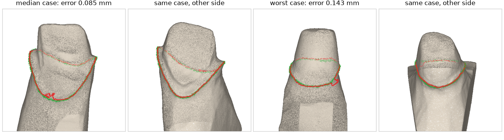

现状一句话：在单独的代型上误差只有零点零几毫米，但还没接进流程，也没在口内扫描上测过。这一轮没有重新训练。
| 指标 | 一句话 | 方向 |
|---|---|---|
| 平均误差 | 预测的颈缘线上每个点，到技工画的那条线有多远，取平均。表里给的是所有病例的中位数 | 越小越好 |
| 最差的一个 | 测试病例里平均误差最大的那一例，看“最坏情况” | 越小越好 |
| 0.2 mm 以内的点 | 预测线上离真线不超过 0.2 mm 的点占多少。0.2 mm 大约是技工之间画线的差异，到这个水平就算合格 | 越大越好 |
| Hausdorff（别家论文） | 整条线上差得最远的一处有多远，是“最大误差”，不能和平均误差直接比 | 越小越好 |
